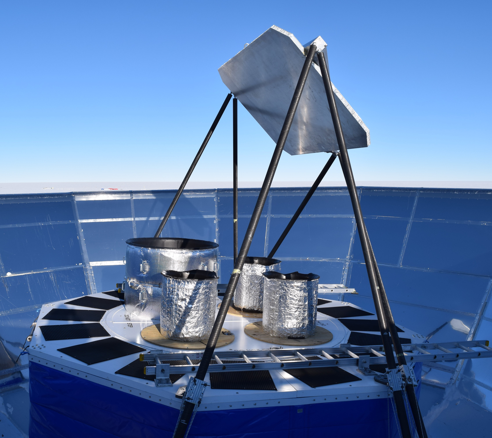
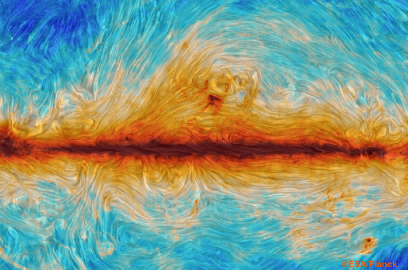
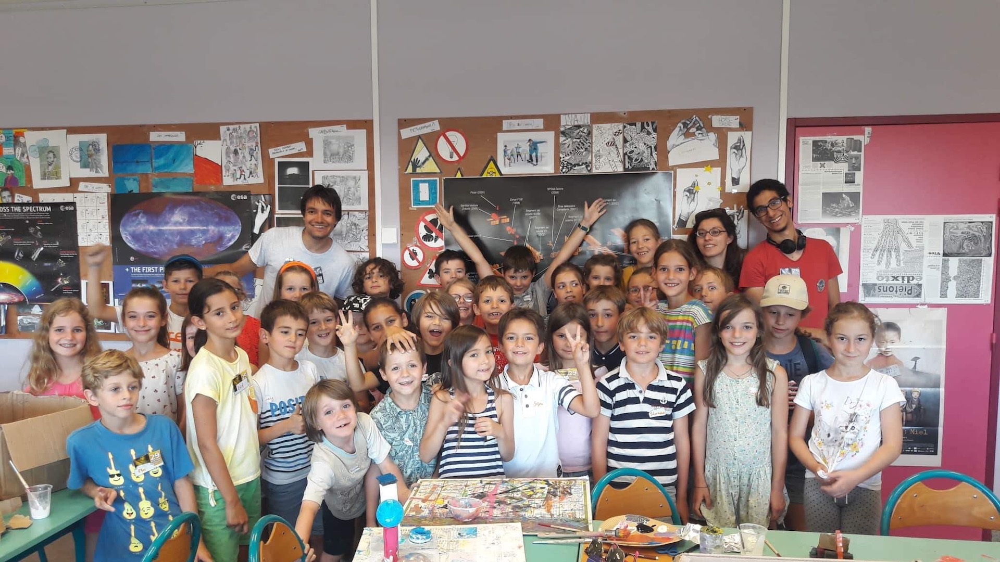

Clara Vergès, PhD
I am an observational cosmologist, focusing on instrument modeling, systematic studies and data analysis for Cosmic Microwave Background (CMB) polarisation experiments. I work as a Staff Scientist in the Physics Division at Lawrence Berkeley National Lab, where I am part of the CMB group. I am a member of the BICEP collaboration. Before coming to Berkeley, I completed my PhD at APC in Paris in 2020, and was then a Harvard Postdoctoral Fellow at the Center for Astrophysics until 2024. For more details, see my CV.
If you are a student or postdoc interested in analysis and instrument design and characterisation for CMB experiments, see below for information about joining the group and/or reach out to me!
Research Interests
My research work focuses on studying the signal of the CMB to look for a specific polarisation pattern: the cosmological B-modes. The detection of this signal would be a smoking gun for inflation theories, allowing us to better understand the very beginning of the Universe.
I focus on calibration and systematics in the context of multi-component data analysis. I develop advanced data analysis techniques to precisely estimate the impact of instrumental systematics on our science results, and how to mitigate their impact in various ways. I also actively participate in design, integration and calibration of current and future receivers.

Calibration
Understanding instrumental systematics require high precision calibration data, as these measurements are an essential step to ensure that instrumental effects are properly taken into account in the analysis. I work first-hand on calibration campaign for CMB telescopes, to make sure we have all necessary measurements to understand the performance of our instruments.
Instrumental Systematics
I work on estimating the impact of various instrumental effects on science results, in particular on cosmological parameters of interest in the search for inflation. I develop frameworks to analyse calibration data and tie them to cosmological analysis. This work also informs calibration campaigns, so that we know the precision of the measurement we need to properly constraint instrumental effects.

Component Separation
One of the main challenges in our quest for B-modes is to be able to separate the CMB signal from Galactic contaminations. This step, known as component separation, requires accurate models of both the instrument and Galactic emission. I develop component separation methods that take into account the interplay between instrumental characteristics and foreground complexity.
Cosmic Birefringence
Cosmic birefringence is an elusive manifestation of parity violation in the electromagnetic interaction. It would manifest as a rotation of CMB polarisation as the signal travels through our Universe. The amplitude of this effect is very low, and degenerate with instrumental polarisation. Constraining it is therefore an instrumental and data analysis challenge. With my BK colleague Dr. James Cornelison, we have been leading the effort in the BK collaboration to extract birefringence constraints from our CMB data. We have recently published our findings in a BICEP/Keck collaboration paper: Measurement of BICEP3 polarization angles and consequences for constraining cosmic birefringence and inflation... and there is more to come!
Joining Us
The CMB group at LBNL works closely with the UC Berkeley Physics and Astronomy programs, and offers research projects for both undergraduate and graduate students from all institutions. If you are a UC Berkeley undergrad, we host students through the URAP program. We also host students from other US institutions through the SULI (for undergraduate students) and SCGSR (for PhD students) programs, sponsored by the DOE Office for Science. On this page, you can find a comprehensive list of fellowships and opportunities to join us at Berkeley Lab, compiled by my colleague Simone Ferraro. If you're interested, feel free to reach out to me to discuss more!
Outreach
I love sharing my passion for cosmology outside the lab. I regularly take part in public outreach, most recently at UC Berkeley Astro Night and Astronomy on Tap San Francisco. In the past, I’ve also been involved with Fête le Savoir, Universciel, and SpaceUp France, helping organize many memorable events. If you are part of a student group or a public outreach organization, feel free to reach out to arrange a talk!


Left: Harvard Astro 191 field trip to the Holmdel Horn Antenna with Dr. Robert Wilson, who discovered the CMB using the antenna in 1965. Right: Group photo during the Astrojeunes summer camp
UC Berkeley Astro Night public talk in March 2025, with my LBNL colleagues Dr. John Groh and Julien Tang